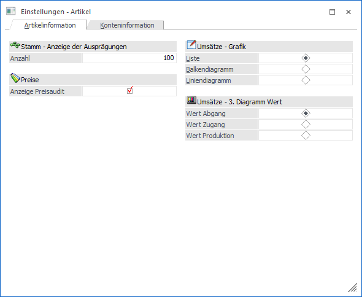
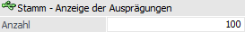
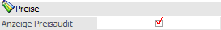
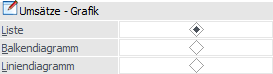
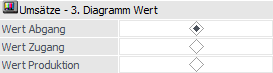

Es besteht die Möglichkeit einige Auswertungsbereiche der WinLine INFO-Module, sowohl auf der Kontenseite als auch auf der Artikelseite, auf individuellen Anforderungen hin anzupassen (z.B. Darstellung der Diagramme).
Die Definition hierfür findet über
1 WinLine INFO
1 Info
1 Einstellungen
1 Einstellungen - Info
statt.
Hinweis
Aus der Artikelinformation kann das Programm auch über das Kontextmenü der rechten Maustaste (Funktion "Einstellungen") aufgerufen werden.
Das Fenster unterteilt sich in die folgenden Register, welche in den nachfolgenden Kapiteln detailliert beschrieben werden:
ü Register "Artikelinformation"
(aktuelles Register)
In dem Register " Artikelinformation" können spezielle
Einstellungen für die Artikelinformation vorgenommen werden.
ü Register "Konteninformation"
In dem
Register " Konteninformation" können spezielle Einstellungen für die
Konteninformation vorgenommen werden.
Register "Artikelinformation"

Die in dem Register "Artikelinformation" zu treffenden Einstellungen, gelten in der Artikelinformation für die Bereiche "Stamm", "Umsätze" und "Preis".
Stamm - Anzeige der Ausprägungen

Ø Anzahl
An dieser Stelle kann die Anzahl der anzuzeigenden Ausprägungen im Bereich "Stamm" der Artikelinformation bestimmt werden.
Hinweis
Die Einstellung "0" bedeutet, dass alle Ausprägungen angezeigt werden sollen.
Preise

Ø Anzeige Preisaudit
Mit Hilfe dieser Option kann definiert werden, ob die Anzeige der Preisaudits im Bereich "Preise" gewünscht ist oder nicht.
Umsätze - Grafik

Ø Liste / Balkendiagramm / Liniendiagramm
An dieser Stelle kann entschieden werden, was für eine Grafik in dem Bereich "Umsätze" in der Artikelinformation angezeigt werden soll.
Umsätze - 3. Diagramm Wert

Ø Wert Abgang / Wert Zugang / Wert Produktion
In der Umsatzgrafik der Artikelinformation werden immer 3 Werte dargestellt, wobei "Umsatz" und "Rohertrag" fest vorgegeben sind. Der 3. Wert kann an dieser Stelle ausgewählt werden.
Buttons

Ø Ok
Durch Anwahl des Buttons "Ok" bzw. durch Drücken der F5-Taste werden die getätigten Änderungen gespeichert. Das Fenster bleibt hierbei geöffnet, so dass z.B. in dem Register "Konteninformation" ebenfalls Eingaben vorgenommen werden können.
Ø Ende
Durch Anwahl des Buttons "Ende" bzw. der Taste ESC wird der Programmbereich verlassen und alle nicht gespeicherten Eingaben verworfen.